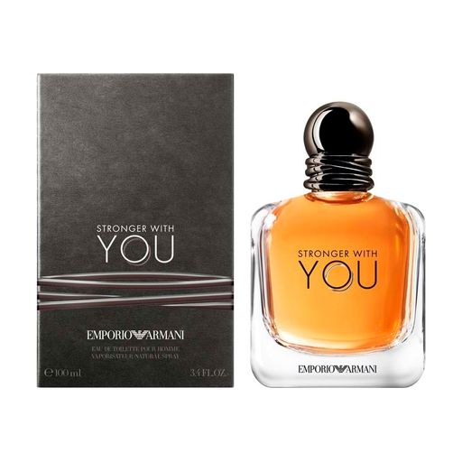

|
Парфуми Calvin Klein
Бренд заснував у 1968 році Келвін Кляйн (Calvin Klein) і його бізнес-партнер
Баррі Шварц (Barry Schwartz). У 80-х роках Келвін Кляйн створив зі звичайних
джинсів дизайнерський аксесуар, почавши вишивати своє ім’я на задній кишені
штанів.
Бренд Calvin Klein славиться своїми чіткими лініями та мінімалістським стилем. Все це стосується також парфумів Calvin Klein, які стали культовими не лише завдяки своїм неповторним ароматичним композиціям, але й досконалому дизайну. Перші аромати з’явились наприкінці 70-х років. Для багатьох людей вони й досі залишаються символом духу того десятиріччя, в якому вони були створені. На початку 90-х років на ринку з’явились революційні аромати Obsession і Eternity, які стали легендою й остаточно підтвердили місце бренду Calvin Klein у світі парфумерії. Аромати Calvin Klein створені в результаті співробітництва з найкращими парфумерами всього світу та під патронатом однієї з найбільших провідних косметичних компаній – Coty.
Ціни на дані позиції коливаються в межах від 500 - 1000 грн.
|
|
|
Парфуми Hugo Boss
Бренд Hugo Boss давно став синонімом розкішної й якісної чоловічої моди, аксесуарів
і
косметики. Уже зі самого початку бренд почав користуватись популярністю завдяки
високій
якості матеріалів і німецькому відчуттю деталей і точності.
Компанія Hugo Boss пишається тим, що її працівники приділяють особливу увагу потребам і побажанням своїх клієнтів. Це саме стосується й виробництва косметики, де основний акцент роблять на вибір найбільш якісних інгредієнтів. Завдяки вищенаведеним фактам сьогодні Hugo Boss практично диктує правила усій чоловічій моді світу. Незважаючи на це, в Hugo Boss свої парфуми чи ексклюзивний одяг можуть вибрати й жінки. Перший аромат Hugo Boss з’явився в 90-х роках минулого сторіччя, а тепер бренд представляє декілька лінійок сучасних чоловічих і жіночих парфумів, адаптованих до сучасного стилю життя. Парфуми Hugo Boss створені із прискіпливістю для відображення сильної особистості свого власника, а також для підкреслення його краси.
Ціни на дані позиції коливаються в межах від 1500 - 2000 грн.
|
|
|  |
Парфуми Armani
Armani представляє елегантність, в якій поєднуються непідвладність часу та сучасні
тенденції. Джорджо Армані (Giorgio Armani) вважається одним із найуспішніших
італійських
модельєрів усіх часів. Своїм неповторним стилем, у якому поєднується невимушеність
із
вкрапленням екстравагантності, він завоював серце мільйонів жінок у всьому світі.
Так
само як і його моделі, косметика та парфуми Armani — це синонім слова «якість»,
«непідвладність часу» й «успіх».
До заснування власного бренду Армані працював незалежним модельєром для багатьох будинків моди. Створивши свою першу власну колекцію в 70-х роках минулого століття, незабаром він ввів на ринок і серію косметики, макіяжу та парфумів, що отримали ім'я Armani. Чоловічі парфуми Armani Acqua di Giò або жіночі Armani Si — це класика, непідвладна часу, що назавжди увійшла в історію та досі фігурує на найвищих щаблях популярності. Незважаючи на те чи оберете ви перевірену часом класику, чи сучасну інтерпретацію — вибір парфумів Armani ніколи не може бути помилковим.
Ціни на дані позиції коливаються в межах від 1000 - 1500 грн.
|
|
Парфуми Versace
Бренд Versace — це не тільки символ італійської розкоші та непідвладного часу стилю
з
дрібкою екстравагантності. Модне вбрання, парфумерія та аксесуари зі знаменитим
логотипом у вигляді міфічної Медузи поєднують у собі відповідність сучасному способу
життя та пошану до італійських традицій і сімейної спадщини.
Історія цього елітного бренда веде відлік від 1978 року, коли він був заснований у Мілані прогресивним та ексцентричним модельєром Джанні Версаче (Gianni Versace). Його неповторний стиль миттєво здобув шанувальників по всьому світу, а бренд Versace став одним із провідних світових будинків моди. Перший аромат від Versace — Gianni Versace for Women — побачив світ у 1981 році, а сьогодні портфоліо бренда нараховує вже кілька десятків парфумів для жінок і чоловіків. До найпопулярніших чоловічих ароматів Versace належать туалетні води Versace Eros із духмяною ароматичною композицією, Dylan Blue та Versace The Dreamer, а також парфумована вода Versace Eros Flame, яка втілює полум'яну пристрасть. Бестселерами серед жінок у всьому світі стали легендарний фруктово-квітковий аромат Versace Bright Crystal та квітково-деревний Versace Versense. Жіночі парфуми Versace в подарункових наборах із косметикою для тіла також користуються шаленим успіхом. Відкрийте для себе світ парфумів Versace, і ви неодмінно закохаєтесь у ці пристрасні аромати з італійським темпераментом.
Ціни на дані позиції коливаються в межах від 2000 - 2500 грн.
|